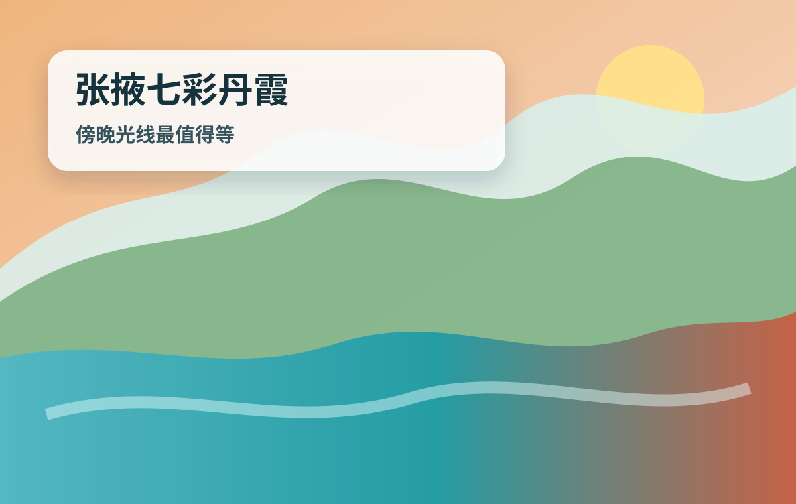
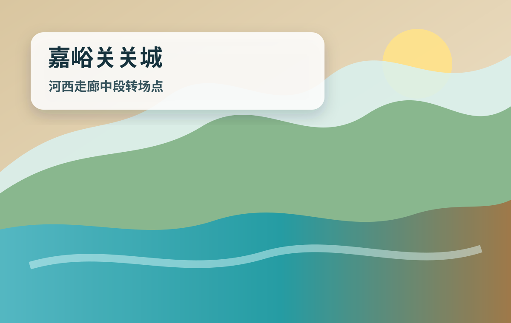
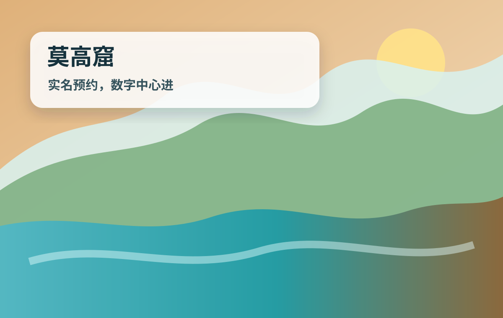
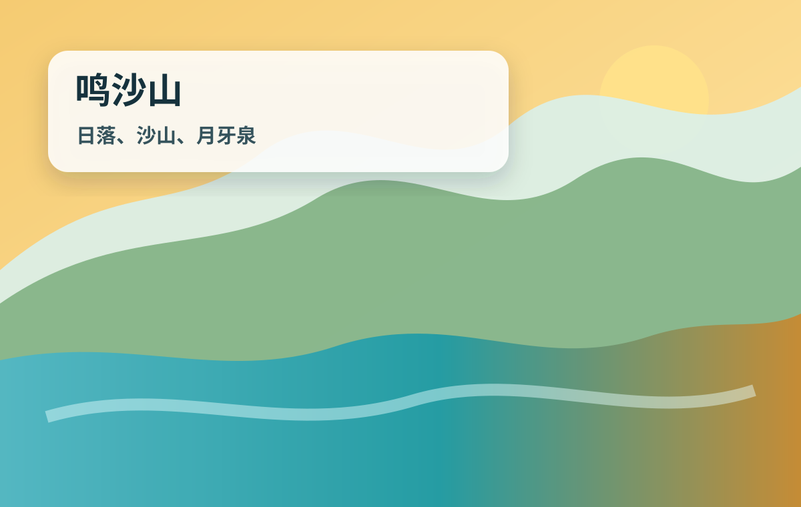
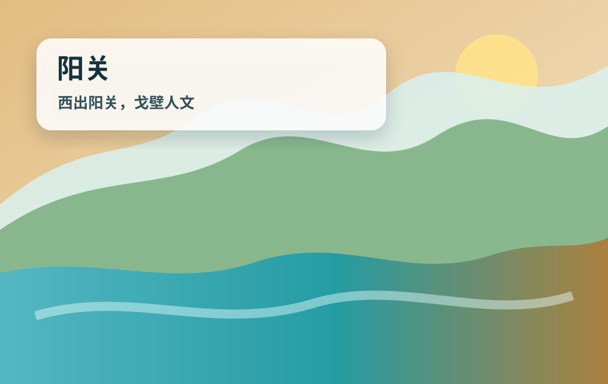
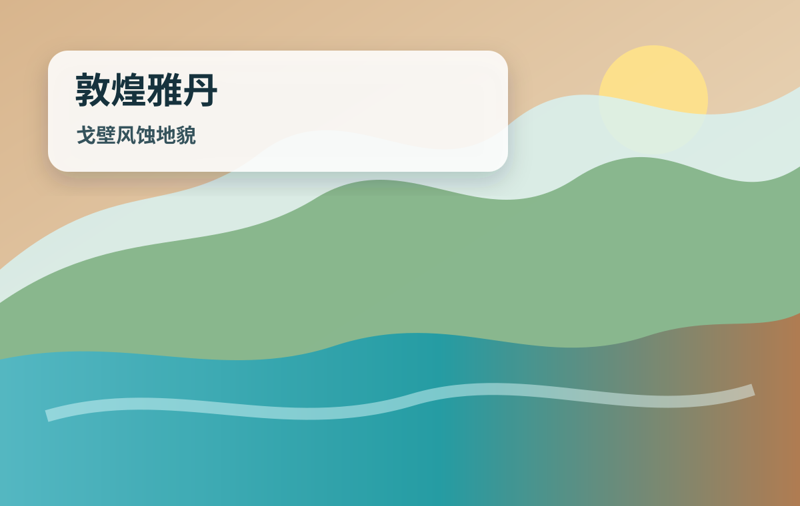
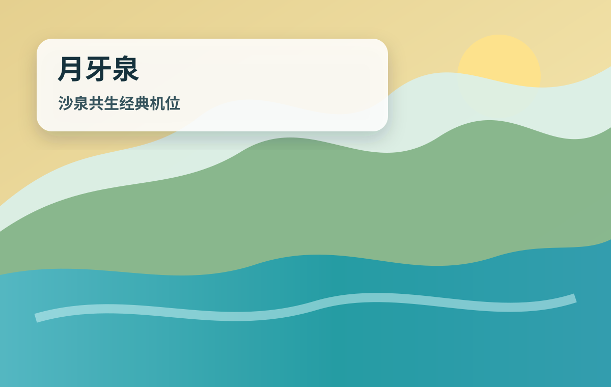
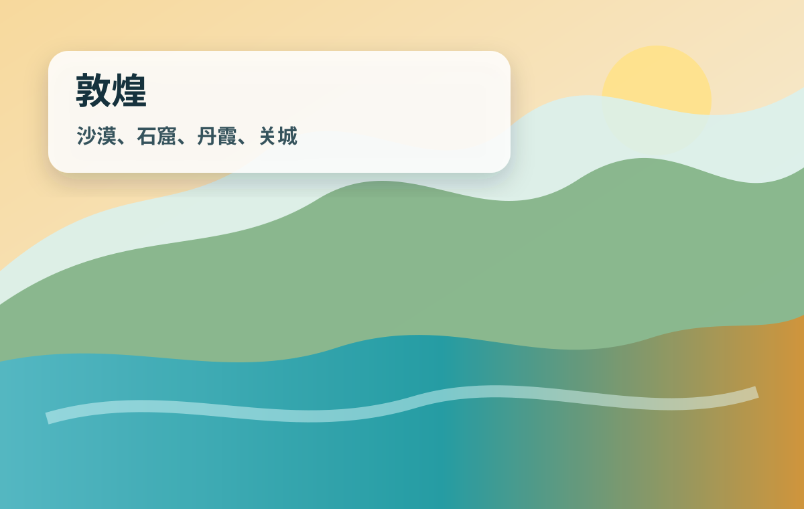

张掖七彩丹霞旅行总控台
先判断是否适合你总路线佛山/广州→兰州/张掖→嘉峪关→敦煌→广州/佛山
天数7天6晚，可加1-2天缓冲
交通飞机/高铁/普通卧铺 + 拼车/打车
预算两人不含大交通约5200-13500元
佛山/广州兰州/张掖张掖丹霞嘉峪关敦煌莫高窟鸣沙山返程
结论：如果暑期敦煌机票贵，先查“广州→兰州/张掖”，再一路坐火车到敦煌，通常比硬买敦煌直飞更灵活；如果时间非常充裕，普通卧铺能省钱，但会牺牲睡眠和体力。
经典图片
本地内置示意图，复制到其他电脑也能显示
嘉峪关关城
莫高窟
鸣沙山月牙泉
阳关
雅丹路线ABC怎么选
按预算和体力取舍方案A｜完整西北奇观版
路线：广州/佛山→兰州/张掖→张掖丹霞→嘉峪关→敦煌→莫高窟→鸣沙山→西线→返程
优点：景观最完整，转场多但不浪费大老远去西北的机会。
缺点：比较累，暑期机票和包车会贵。
方案B｜舒适省体力版
路线：广州飞兰州/敦煌，减少嘉峪关或西线，只把莫高窟、鸣沙山、丹霞做扎实。
优点：体力压力低，适合怕长途坐车。
缺点：少看一段河西走廊，机票成本更高。
方案C｜时间充裕省钱版
路线：广州普通卧铺/高铁到兰州，再张掖、敦煌慢慢走，返程也可兰州中转。
优点：预算更可控，适合你说的时间很充裕。
缺点：路上时间明显增加，睡眠和行李体验不如飞机。
每日执行卡
旅行现场照着走D1｜佛山/广州 → 兰州/张掖今天只负责顺利到西北，优先住张掖市区或张掖西站附近；如果晚点就住兰州西站附近，第二天早车去张掖。
住宿张掖西站/钟鼓楼/甘州市场酒店圈；晚到兰州就住兰州西站酒店圈。
预算大交通按实付；市内交通约80-220元/两人，餐饮约120-220元/两人，住宿约180-320元/间。
可删到兰州就住兰州西站，D2早上去张掖。
天气取消夜市，只保留酒店休息和第二天丹霞。
比价广州白云→张掖/敦煌/兰州三种机票，同时看广州南/广州白云站→兰州西火车；确认行李额和退改。
航司App 12306 广州白云机场 广州南站
佛山去广州白云机场或广州南。带行李优先打车/城际+地铁，国内航班提前2小时到机场。
广州白云机场 T1 T2 国内出发
方案A飞张掖最省转场；方案B飞兰州再高铁到张掖；方案C高铁到兰州西，时间长但稳定。
兰州西站 张掖西站
先去酒店放行李，住张掖西站方便第二天包车/打车，住钟鼓楼吃饭更方便。
张掖西站 酒店 钟鼓楼
晚餐吃清淡面食或牛肉面，辣椒单独放；不要第一晚吃太油太辣。
张掖 钟鼓楼 牛肉面 不辣
A/B/天气方案：正常版：当天到张掖并入住，晚上只吃饭不加景点。；太累版：到兰州就住兰州西站，D2早上去张掖。；下雨/晚点版：取消夜市，只保留酒店休息和第二天丹霞。
D2｜张掖七彩丹霞完整日上午轻松补张掖市区，下午去七彩丹霞等日落；丹霞最值得的是傍晚光线，不要中午硬晒。
住宿继续住张掖西站/钟鼓楼，第二天去嘉峪关更顺。
预算门票+观光车约108元/人起，以景区/OTA为准；包车/打车约180-360元/两人；餐饮约160-300元/两人。
可删上午完全休息，只去丹霞。
天气丹霞改16:30后入园；若雨大则看天气窗口，保留张掖市区轻逛。
睡到自然醒，市区吃早餐；想看人文可去张掖大佛寺，不想进寺就保留体力。
张掖 大佛寺
午餐吃臊面、牛肉小饭、炒拨拉可点不辣；避开过油重口。
张掖 甘州市场 清淡 面食
酒店出发去七彩丹霞，建议包车/打车，车程约40-60分钟，预留堵车和取票时间。
张掖七彩丹霞 北门
七彩丹霞按观光车站点走，重点等4号/5号观景台日落；看完再回市区。
张掖七彩丹霞 观景台
回酒店洗澡休息，准备D3长距离转场。
张掖西站 酒店
A/B/天气方案：正常版：大佛寺+七彩丹霞日落。；太累版：上午完全休息，只去丹霞。；暴晒/下雨版：丹霞改16:30后入园；若雨大则看天气窗口，保留张掖市区轻逛。
D3｜张掖 → 嘉峪关 → 敦煌今天是河西走廊转场日：张掖到嘉峪关看关城，再去敦煌；如果怕累，直接张掖到敦煌。
住宿敦煌沙洲夜市/敦煌市政府/鸣山路酒店圈。
预算火车约80-260元/人分段浮动；嘉峪关门票旺季约100-110元/人；餐饮约180-320元/两人。
可删跳过嘉峪关，张掖直达敦煌。
天气若到敦煌超过21:00，取消夜市，只吃酒店附近。
张掖西坐动车/火车到嘉峪关南或嘉峪关站，按12306实际车次买。
张掖西站 嘉峪关南站
嘉峪关关城游玩2-3小时，主要看关城、城楼、长城博物馆外线；中午简单吃。
嘉峪关关城 游客中心
嘉峪关继续坐火车/动车去敦煌，若车次不顺可改酒泉南/柳园南中转。
嘉峪关站 敦煌站 柳园南站
到敦煌后打车进市区，住沙洲夜市/鸣山路一带，晚上只吃饭。
敦煌 沙洲夜市 酒店
核对D4莫高窟预约时间；莫高窟一定不要直接导航到洞窟区。
莫高窟数字展示中心
A/B/天气方案：正常版：张掖→嘉峪关关城→敦煌。；太累版：跳过嘉峪关，张掖直达敦煌。；晚点版：若到敦煌超过21:00，取消夜市，只吃酒店附近。
D4｜莫高窟重点日莫高窟是敦煌核心，按预约时间提前到数字展示中心；下午回市区休息，晚上沙洲夜市轻逛。
住宿敦煌沙洲夜市/鸣山路继续住。
预算莫高窟常规票旺季约238元/人量级，应急票更低但内容少；打车约40-100元/两人；餐饮约180-360元/两人。
可删只保留莫高窟，晚上酒店附近吃饭。
天气以景区通知为准，若洞窟停开按官方退改处理，改敦煌博物馆/市区休息。
从酒店出发到莫高窟数字展示中心，先换/检票、安检、候场。
莫高窟数字展示中心
常规参观看数字电影+摆渡车+实体洞窟；洞窟内禁止拍照、禁止大声说话。
莫高窟参观预约网
回市区午餐，避开中午沙漠暴晒，回酒店午休。
敦煌市区 清淡 午餐
如果精神好，补敦煌博物馆或党河风情线；累了直接休息。
敦煌博物馆
沙洲夜市吃驴肉黄面、杏皮水、烤包子少量尝鲜，所有辣椒单独放。
敦煌 沙洲夜市 驴肉黄面 不辣
A/B/天气方案：正常版：莫高窟+午休+沙洲夜市。；太累版：只保留莫高窟，晚上酒店附近吃饭。；沙尘/强降雨版：以景区通知为准，若洞窟停开按官方退改处理，改敦煌博物馆/市区休息。
D5｜鸣沙山月牙泉日落上午睡晚一点，下午进鸣沙山等日落；中午不要进沙漠，热和晒都不划算。
住宿敦煌沙洲夜市/鸣山路继续住。
预算鸣沙山门票约110元/人，项目另付；打车约30-80元/两人；餐饮约160-320元/两人。
可删白天完全休息，只去鸣沙山。
天气延后到17:30后入园；若风沙大就取消爬高沙丘。
轻松早餐后可去敦煌博物馆/雷音寺，尽量安排室内或短距离点。
敦煌博物馆 雷音寺
午餐+酒店午休，防晒霜、墨镜、帽子、充电宝准备好。
敦煌 市区 午休
打车到鸣沙山月牙泉，中门/景区入口按当天开放口径确认。
鸣沙山月牙泉 景区入口
先看月牙泉，再爬沙山看日落；骑骆驼/滑沙按预算选择，不作为必花钱项目。
鸣沙山月牙泉 月牙泉
打车回酒店，冲澡补水，不再安排远距离夜游。
敦煌 沙洲夜市 酒店
A/B/天气方案：正常版：博物馆/雷音寺+鸣沙山日落。；太累版：白天完全休息，只去鸣沙山。；暴晒/大风版：延后到17:30后入园；若风沙大就取消爬高沙丘。
D6｜敦煌西线：阳关/玉门关/雅丹西线距离远，优先拼车/包车，不建议自己折腾公共交通；如果预算紧，就只选阳关或玉门关。
住宿敦煌市区最后一晚，方便D7返程。
预算拼车/包车约200-600元/人浮动；阳关门票+观光车约60元/人；雅丹门票+观光车约120元/人量级。
可删只做阳关+玉门关，放弃雅丹远线。
天气取消雅丹日落，改市区休息或敦煌书局。
酒店接人出发，带足水、纸巾、防晒、零食；西线补给少。
敦煌 西线 拼车
阳关景区，看阳关博物馆、烽燧、戈壁视野；讲解可按兴趣选择。
敦煌 阳关景区
玉门关/汉长城一线，停留不宜过久，重点拍戈壁和遗址氛围。
敦煌 玉门关
雅丹地质公园看风蚀地貌和日落班，具体班次以景区当天为准。
敦煌雅丹国家地质公园
回市区吃简单晚餐，整理行李。
敦煌 沙洲夜市 酒店
A/B/天气方案：正常版：阳关+玉门关+雅丹日落。；太累版：只做阳关+玉门关，放弃雅丹远线。；大风/沙尘版：取消雅丹日落，改市区休息或敦煌书局。
D7｜敦煌 → 广州/佛山返程日不加硬景点，按机票/火车时间退房去机场或火车站；时间充裕可多加1天在敦煌缓冲。
住宿返程，不住宿；如果车票太晚可钟点房/酒店寄存。
预算返程大交通按实付；市内交通约40-160元/两人；餐饮约120-240元/两人。
可删敦煌多住1晚，次日返程。
天气先保住广州段，必要时改签到兰州/西安/成都中转。
睡醒吃早午餐，核对机票/火车票、身份证、行李和充电设备。
敦煌 酒店 行李寄存
去敦煌机场/敦煌站/柳园南站，柳园南更远，要预留足够接驳时间。
敦煌机场 敦煌站 柳园南站
若经兰州/西安/成都中转，转机至少预留2小时，火车换乘至少预留45-90分钟。
兰州中川机场 西安咸阳机场
广州白云机场/广州南站回佛山，太晚优先打车或约车，不再省小钱折腾。
广州白云机场 佛山
A/B/天气方案：正常版：按票返程。；太累版：敦煌多住1晚，次日返程。；晚点版：先保住广州段，必要时改签到兰州/西安/成都中转。
交通接驳卡
从佛山/广州出发的费用和取舍佛山/广州出发怎么去最划算
飞机、高铁、火车的费用和取舍下面价格是按2026年7月出行的查询口径做的预算区间，用来判断方案，不是最终成交价。机票、火车票会随日期、余票、行李额、退改规则变化，付款前以航司、12306、携程、飞猪、去哪儿实际页面为准。
路线
飞机往返/开口
火车/高铁往返
取舍建议
山东—开封线
优先飞机去济南、郑州飞回广州；中间用高铁串城。
约1200-2600元/人；两人约2400-5200元。广州白云→济南遥墙，返程郑州新郑→广州白云，暑期和临近出发会涨。
约1500-2100元/人；两人约3000-4200元。广州南/广州白云→济南西约10-12小时，郑州东→广州南约6-7小时。
优点：飞机省体力，适合7天；高铁稳定但首日太长，时间充裕才考虑。
缺点：飞机价格波动大；高铁省不了太多钱，且第一天会被长途消耗。
核对：航班看航司/携程/飞猪/去哪儿；火车看12306，优先确认上车站别买错。
缺点：飞机价格波动大；高铁省不了太多钱，且第一天会被长途消耗。
核对：航班看航司/携程/飞猪/去哪儿；火车看12306，优先确认上车站别买错。
九寨沟线
时间宽裕可高铁到成都；想省体力就飞成都，再高铁到黄龙九寨站。
约1500-3200元/人；两人约3000-6400元。广州白云↔成都天府/双流，成都再接高铁/拼车进九寨。
约1700-2400元/人；两人约3400-4800元。广州南→成都东二等座常见约645-670元/程，再加成都↔黄龙九寨站和接驳。
优点：高铁价格更稳，时间充裕可省机票波动；飞机能把体力留给高原景区。
缺点：高铁到成都当天已较累；九寨沟真正贵的是当地接驳、门票和住宿。
核对：成都航班看航司/OTA；成都东/成都西到黄龙九寨站车次看12306。
缺点：高铁到成都当天已较累；九寨沟真正贵的是当地接驳、门票和住宿。
核对：成都航班看航司/OTA；成都东/成都西到黄龙九寨站车次看12306。
张掖—敦煌线
推荐飞机或高铁先到兰州/张掖，再一路西行到敦煌；不建议全程硬坐。
约2200-4300元/人；两人约4400-8600元。广州到敦煌/张掖多为直飞少、经停或中转，灵活日期能明显省钱。
约1800-3200元/人；两人约3600-6400元。广州南→兰州西高铁二等座约1058元/程，普通卧铺可省钱但单程约30小时。
优点：飞机节省两天路上时间；普通卧铺省钱且适合时间很宽裕的人。
缺点：敦煌旺季机票贵；火车长距离转场多，行李和睡眠质量会影响体验。
核对：长途火车看12306；机票看航司/携程/飞猪/去哪儿，优先比较广州白云到敦煌、张掖、兰州三种落点。
缺点：敦煌旺季机票贵；火车长距离转场多，行李和睡眠质量会影响体验。
核对：长途火车看12306；机票看航司/携程/飞猪/去哪儿，优先比较广州白云到敦煌、张掖、兰州三种落点。
山东—开封线路线图
佛山/广州济南青岛威海开封郑州机场广州/佛山
九寨沟线路线图
佛山/广州成都黄龙九寨站黄龙九寨沟若尔盖成都广州/佛山
张掖—敦煌线路线图
佛山/广州兰州/张掖张掖丹霞嘉峪关敦煌莫高窟鸣沙山广州/佛山
从佛山出发建议：飞机优先打车/城轨/地铁到广州白云机场；高铁优先广州南，佛山西只有在车次更顺或少换乘时再选。不要为了省几十块把出发站换得太复杂。
佛山/广州 → 出发站
飞机去白云机场，高铁去广州南/广州白云站；佛山西只在车次特别顺时选。
费用/时间：打车/城轨/地铁约1-2.5小时，约15-320元，按行李和时间取舍。
广州 → 兰州/张掖/敦煌
机票优先比较三种落点；高铁优先到兰州西，再接张掖。
费用/时间：飞敦煌/张掖省转场但贵；飞兰州选择多；高铁到兰州西约10-13小时。
兰州 → 张掖
兰州西坐动车/高铁到张掖西，适合作为西北线第一段。
费用/时间：车票和时刻以12306为准，建议留60分钟以上站内/市内接驳。
张掖 → 嘉峪关 → 敦煌
分段火车最稳；若时间紧可张掖直达敦煌。
费用/时间：嘉峪关是顺路人文点，不是非去不可；车次不顺就删。
敦煌市区 → 莫高窟
打车/景区交通到莫高窟数字展示中心，不要直接去洞窟区。
费用/时间：预约时间前30-60分钟到；旺季更建议提前。
敦煌市区 → 鸣沙山
公交3路或打车，打车最省心。
费用/时间：傍晚去最舒服，返程打车可能排队，提前叫车。
敦煌西线
拼车/包车优先，公共交通不推荐。
费用/时间：阳关、玉门关、雅丹距离远，必须带水和防晒。
敦煌 → 广州/佛山
比价敦煌直飞/中转、敦煌/柳园南火车到兰州再飞或高铁。
费用/时间：时间充裕可多留1天做缓冲，别把返程卡太死。
景点攻略卡
门票、预约、入口、避坑张掖七彩丹霞D2
D2
- 开放：旺季常见为清晨至傍晚分时开放，官方示例夏季有05:30-19:00口径；以景区当天公告为准。
- 门票：门票+观光车常见约108元起。
- 预约：官方/OTA实名预约，现场也可能可买，旺季建议提前。
- 路线：北门/西门按当天交通选；推荐傍晚入园，按观光车站点走，重点等日落。
- 避坑：别中午硬晒；下雨后若天开，颜色反而可能更好。
- 导航：张掖七彩丹霞
嘉峪关关城D3
D3
- 开放：旺季通常早到晚开放，具体以嘉峪关文物景区公告为准。
- 门票：旺季约100-110元/人量级。
- 预约：景区公众号/OTA/现场核对。
- 路线：游客中心入园，看关城、城楼、长城博物馆外线，2-3小时足够。
- 避坑：如果车次不顺可删，不要为它拖垮敦煌。
- 导航：嘉峪关关城
莫高窟D4
D4
- 开放：敦煌研究院2026公告：旺季4月1日-11月30日08:00-18:00，16:10停止检票。
- 门票：常规/应急参观价格和内容不同，以莫高窟参观预约网为准。
- 预约：莫高窟参观预约网微信服务号/小程序；不建议找第三方代抢。
- 路线：第一站是莫高窟数字展示中心，常规参观看电影、摆渡车、洞窟。
- 避坑：洞窟内不能拍照；必须带身份证；强降雨/沙尘可能停开。
- 导航：莫高窟
鸣沙山月牙泉D5
D5
- 开放：开放和售检票随季节调整，2026年官方公告曾有06:00-19:30等口径；以景区公众号为准。
- 门票：门票约110元/人量级，骆驼/滑沙/鞋套另付。
- 预约：官方公众号、游敦煌、携程/美团/同程等平台预约。
- 路线：下午晚些入园，先月牙泉后沙山日落；中午不建议进沙漠。
- 避坑：大风沙尘别爬高沙丘；无人机和易燃易爆物通常受限。
- 导航：鸣沙山月牙泉

敦煌博物馆D4/D5备选
D4/D5备选
- 开放：开放时间以官方/现场为准，作为暴晒或沙尘天备选。
- 门票：通常低成本或免费预约类，出发前核对。
- 预约：公众号/现场/OTA核对。
- 路线：适合莫高窟后补背景知识，1-2小时即可。
- 避坑：不想逛博物馆可删。
- 导航：敦煌博物馆
阳关景区D6
D6
- 开放：阳关博物馆官网：夏季08:00-19:30，冬季08:30-18:00。
- 门票：门票50元，观光车10元，优惠以现场为准。
- 预约：官网/公众号/现场/OTA。
- 路线：阳关博物馆、烽燧、戈壁视野，2-2.5小时。
- 避坑：西线日晒强，带水、防晒、帽子。
- 导航：阳关景区
玉门关D6
D6
- 开放：以敦煌阳关玉门关旅游区公告为准。
- 门票：门票以景区当期公告为准。
- 预约：官方/OTA/现场核对。
- 路线：通常与阳关、雅丹拼成西线，拍遗址和戈壁氛围。
- 避坑：如果只想舒服，玉门关和雅丹二选一。
- 导航：玉门关
敦煌雅丹国家地质公园D6
D6
- 开放：2025年9月20日起有7:00-17:00、日落班口径，2026出发前重核。
- 门票：成人票约50元，观光车约70元量级。
- 预约：景区/OTA/旅游直通车渠道核对。
- 路线：距离敦煌市区约150-168公里，优先拼车/包车，适合日落。
- 避坑：大风沙尘或太累就删，不要硬撑。
- 导航：敦煌雅丹国家地质公园

沙洲夜市D3-D5晚
D3-D5晚
- 开放：夜市营业随季节和摊位变化。
- 门票：按吃多少花多少。
- 预约：现场/高德/美团核对。
- 路线：吃驴肉黄面、杏皮水、烤包子、小吃；辣椒单独放。
- 避坑：不要第一家就吃饱，避开高价游客套餐。
- 导航：沙洲夜市
每天吃什么
默认清淡不辣点餐话术：我们完全不能吃辣，辣椒、辣油、花椒、麻油都不要，蘸料也不要辣，麻烦做清淡一点。
张掖
牛肉小饭、臊面、搓鱼子、炒拨拉可少量尝；关键词：张掖 钟鼓楼 清淡 面食 评分4.5以上。
嘉峪关
转场日吃简餐，牛肉面/盖饭/饺子优先，不为网红店绕路。
敦煌
驴肉黄面、杏皮水、胡羊焖饼、烤包子、浆水面；全部要求辣椒单独放、不放辣油。
不推荐
沙漠景区里的高价套餐、明显宰客的骑骆驼摄影套餐、排队超过30分钟还离路线远的店。
住宿订房助手
住交通方便，不住偏远网红民宿张掖住宿
推荐圈：张掖西站/钟鼓楼/甘州市场
张掖西站方便转场，钟鼓楼吃饭方便；筛选180-320元、评分4.5以上、可免费取消、有电梯、可寄存。
避开：避开离主路太远和民宿无电梯高楼层。
张掖西站/钟鼓楼/甘州市场
兰州备选
推荐圈：兰州西站
如果D1晚点到不了张掖，住兰州西站附近，第二天早车去张掖；不要住太远的老城深处。
避开：只作为中转，不为夜景绕路。
兰州西站
敦煌住宿
推荐圈：沙洲夜市/敦煌市政府/鸣山路
吃饭、打车去莫高窟数字中心和鸣沙山都方便；筛选200-380元、可取消、有空调、可寄存。
避开：避开太靠景区但吃饭交通不便的孤立民宿。
沙洲夜市/敦煌市政府/鸣山路
预算账本
大交通单独核算省钱慢游
两人不含大交通约5200-7600元
住宿约1260-2100，餐饮约1400-2200，门票约1300-1800，市内/拼车约1200-1800。
怎么省：少包车，嘉峪关/雅丹按体力删，火车多用普通卧铺或高铁中转。
均衡推荐
两人不含大交通约7200-9800元
酒店不住豪华，丹霞/莫高窟/鸣沙山/西线保留，拼车和打车结合。
怎么省：最推荐，体验和预算比较平衡。
舒服省心
两人不含大交通约9800-13500元
更多打车/包车，酒店位置更好，机票更灵活。
怎么省：舒服但旺季容易超预算。
不能省的地方：莫高窟、鸣沙山、基本防晒补水、合理接驳。优先压缩：酒店景观房、高价包车、雅丹远线、排队网红餐厅。
准备清单
出发前一天逐项核对证件票务
- 身份证
- 12306
- 航司App
- 酒店订单
- 莫高窟预约
- 鸣沙山预约
- 丹霞/阳关/雅丹购票入口
沙漠防晒
- 高倍防晒霜
- 帽子
- 墨镜
- 防晒衣
- 润唇膏
- 保湿喷雾/面膜
- 舒服鞋
电子
- 充电器
- 充电宝
- 备用数据线
- 手机挂绳
- 离线地图
- 耳机
药品
- 肠胃药
- 晕车药
- 感冒药
- 创可贴
- 藿香正气类防暑用品
- 过敏药
出发前一天
- 核对航班/车次
- 核对莫高窟票面时间
- 查沙尘/大风预警
- 确认酒店可寄存
- 准备少量现金
应急方案
晚点、没票、沙尘、太累莫高窟没票怎么办
先刷官方小程序常规票；没有就看应急票；再没有就把D4改敦煌博物馆+鸣沙山，莫高窟顺延到D5。不要找不明第三方代购。
张掖丹霞下雨怎么办
小雨可等雨后天开，颜色可能更好；大雨就改大佛寺/市区休息，丹霞顺延到D3上午并删除嘉峪关。
鸣沙山大风沙尘怎么办
取消爬高沙丘和骑骆驼，只在入口/月牙泉短停；风沙大就改酒店休息或敦煌书局。
西线太累怎么办
只保留阳关，删除玉门关和雅丹；或者整天休息，把钱留给返程。
火车没票怎么办
优先查兰州/西宁/嘉峪关/柳园南中转，不要只盯一个站；买到票后再订不可退酒店。
机票太贵怎么办
先查广州→兰州、广州→张掖、广州→敦煌三种，再查深圳/珠海备选；仍贵就高铁/卧铺到兰州。
酒店订偏怎么办
马上看高德从酒店到火车站/沙洲夜市/莫高窟数字中心的打车时间，超过25分钟且周边没饭店就换可取消酒店。
预算超了怎么办
先压酒店，不住景观房；再删雅丹/包车；不要删莫高窟和鸣沙山，这是敦煌核心。
来源和核对入口
出发前重新核对本攻略用于旅行执行参考，机票、火车票、酒店、景区开放时间、莫高窟参观模式、鸣沙山售检票、餐厅营业时间都会变化，出发前请以航司、12306、酒店平台、景区官方公众号、高德/美团实际页面为准。更新时间：2026-07-05。